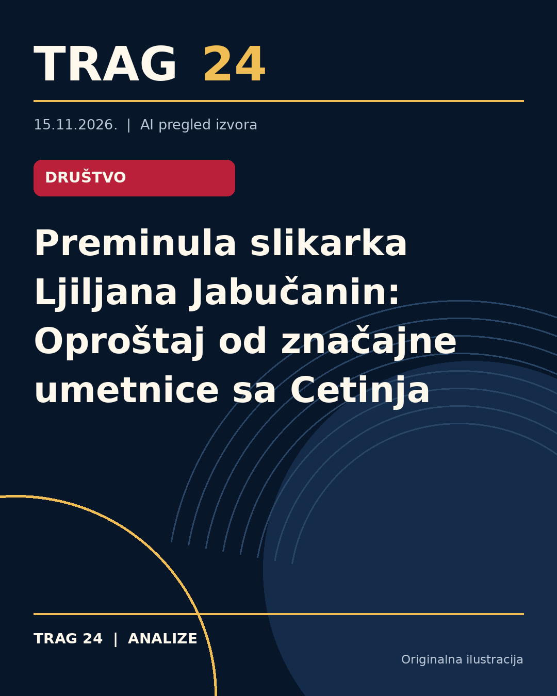

Preminula slikarka Ljiljana Jabučanin: Oproštaj od značajne umetnice sa Cetinja

ŠTA SE DOGODILO
Slikarka Ljiljana Jabučanin preminula je nedavno, a sahranjena je 14. novembra na Starom groblju na Cetinju, u porodičnom krugu. Bila je poznata po svom dugogodišnjem umetničkom radu i dubokom uticaju na kulturnu scenu svoje sredine.
HRONOLOGIJA
Ljiljana Jabučanin rođena je 17. marta 1957. godine u Cetinju, gde je završila osnovnu školu i gimnaziju. Diplomirala je na Nastavničkom fakultetu u Nikšiću, na likovnom odseku. Prvu samostalnu izložbu priredila je 1979. godine u Kraljevskom pozorištu Zetski dom na Cetinju. Tokom svoje karijere imala je čak 84 samostalne i preko 150 kolektivnih izložbi. Njena poslednja samostalna izložba održana je u galeriji Centra za kulturu Prijestonice Cetinje.
ŠTA NAVODE IZVORI
Svi izvori prenose da je od umetnice tokom sahrane u porodičnom krugu na Cetinju oprostio Centar za kulturu Prijestonice Cetinje, iz čije galerije je potekla njena poslednja samostalna izložba. U oproštajnoj poruci ovaj centar istakao je Ljiljanin vedar duh, toplinu i neposrednost, kao i snažan utisak koji je ostavljala na ljude. Opisali su je kao osobu čiji karakter, dobrota i jednostavnost ostavljaju neizbrisiv trag.
ŠTA JE POTVRĐENO
Potvrđeno je da je Ljiljana Jabučanin ostavila značajnu umetničku zaostavštinu, priznata je važnim nagradama poput Jugoslovenske nagrade za slikarstvo iz 1986. godine. Sahranjena je 14. novembra na Starom groblju na Cetinju. Njeni biografski podaci, profesionalni put i umetnički značaj navedeni su konzistentno u svim izvorima.
ŠTA NIJE POTVRĐENO
U dostupnim tekstovima nema informacija o uzroku smrti slikarke ili detaljima iz privatnog života koji bi mogli biti od značaja za širu javnost. Takođe, nije dato dodatno tumačenje njenog umetničkog stila ili retrospektiva o njenom mestu u umetničkoj sceni šire regije.
ŠTA OSTАJE OTVORENO: Ostaje nepoznato kada je likovnoj javnosti saopštena vest o njenoj smrti, kao i koji su planovi vezani za eventualne retrospektive ili hommage umetnici u budućnosti. Takođe, detalji o njenom ličnom životu i neposrednim okolnostima prerane smrti ostaju van dostupnih izvora.
Izvori
- https://www.blic.rs/kultura/umrla-cuvena-slikarka-ljiljana-jabucanin/0erytbv
- https://www.kurir.rs/zabava/kultura/10162982/umrla-slikarka-ljiljana-jabucanin
- https://www.telegraf.rs/pop-i-kultura/art/4433493-umrla-slikarka-ljiljana-jabucanin
Ova analiza je pripremljena uz pomoć veštačke inteligencije na osnovu javno dostupnih izvora. Navodi izvora nisu nužno nezavisno potvrđeni.